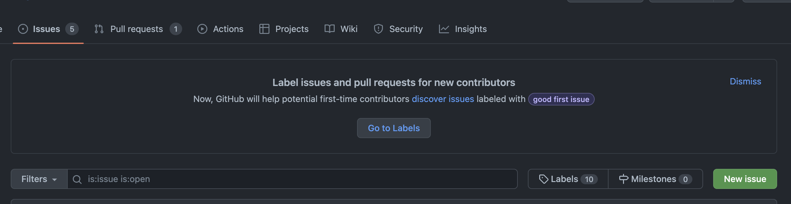

깃허브(GitHub)으로 협업하기 : Issue란?
이번 글에서는 깃허브(Github)으로 협업할 때 사용하는 Issues에 대해서 설명한다.
그리고 Issue 사용법 및 활용법에 대해서 설명한다.
1. Issues란?
모든 활동 내역에 대해서 issue를 등록하고, 등록한 issue 기반으로 작업을 진행한다.
- 프로젝트에서 발생하는 모든 문제를 관리할 수 있도록 돕는다.
- 프로젝트의 작업, 개선 사항 및 버그 추적하는 좋은 방법으로 사용된다.
- issue의 오남용을 막기 위해 issue template을 활용할 수 있다.
- ex) 버그 발생, 개발, 풀 리퀘스트 등
2. Issue 사용법
Issue 생성하고, label(라벨)과 assignee(담당자) 선택한다. 완료 후 issue close한다.
- Issue 생성하기
- Issue Label 설정하기
- Issue 완료 후 close하기
가장 기본적인 생성 방법이다.
Issue -> New issue를 선택한다.

Title, comment를 작성하고 Submit new issue하면 생성 완료된다.
현재 존재하는 PR의 코드로도 Issue 생성 가능하다.

PR의 code review로 남긴 comment도 issue로 생성 가능하다.


Issue가 많아지면 관리하기가 힘들어진다. 이러한 문제점 개선을 위해 Label 기능을 활용할 수 있다.
Labeling을 통해 이슈를 검색, 필터링할 수 있다.
사용 예시